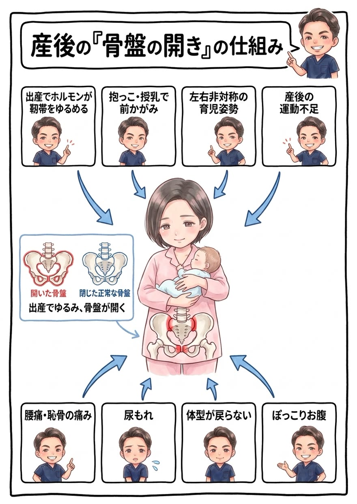

出産、本当にお疲れさまでした。育児で自分は後回しになりがちですが、産後の骨盤ケアには“適した時期”があります。なぜ産後に不調が出るのか、キッズルーム完備の当院が図解でお話しします。

妊娠中、身体は「リラキシン」というホルモンを分泌して、骨盤まわりの靭帯（恥骨結合・仙腸関節）をゆるめ、赤ちゃんの通り道をつくります。つまり産後の骨盤は、ゆるんで開いた状態。本来は数ヶ月かけて自然に閉じていきます。
ところが現実の育児は、そう待ってくれません。ゆるく開いた骨盤のまま、抱っこ・授乳・おむつ替えと、前かがみ＆左右非対称の負担がかかり続けると、骨盤は開いたまま・歪んだままで固まってしまうことがあります。これが、産後の腰痛・恥骨痛・尿もれ・体型変化の正体です。

靭帯がまだ柔らかい産後1〜6ヶ月は、骨盤を正しい位置へ導きやすい絶好のタイミングです。この時期にケアできると、体型戻りも不調の改善もスムーズ。もちろん6ヶ月を過ぎても改善は十分可能ですので、「もう遅いかも」と諦めないでください。

「産後は自然に戻るから様子を見て」——そう思っていませんか。でも、考えてみてください。待っているだけで、ゆるんだ靭帯は正しい位置で締まりますか？ 育児の前かがみ姿勢は変わりますか？ 弱った骨盤底筋は働きを取り戻しますか？ ——自然任せでは、難しいのが現実です。
特に、育児で毎日負担がかかり続ける産後は、放っておくと開いたまま固まってしまいます。
では、どうすればいいのか。答えはひとつです。ゴールデン期間のうちに、体に合った矯正とセルフケアを「継続」する。これに尽きます。 ダイエットが食事メニューの継続で結果を出すのと同じ。正しいことを続けることが、産後の身体を取り戻す近道です。
産後のママの身体は、腰痛・恥骨痛・肩こり・腱鞘炎・睡眠不足と、つらさがいくつも重なっています。当院は、今つらい部分をやさしく緩めながら、原因である骨盤のゆるみ・歪みを整える——この両方を必ずセットで行います。ボキボキしないソフトな矯正が中心なので、産後の身体にも安心です。
原因は、抱っこの仕方、授乳の姿勢、寝かしつけ、睡眠不足——毎日の育児習慣の中にあります。だから当院は、症状だけでなくあなたの育児の一日をとことん深くお聞きし、負担を減らす具体的な工夫まで一緒に考えます。骨盤底筋のトレーニングや、負担の少ない抱っこ・授乳姿勢もお伝えします。ここまで寄り添う産後ケアで、ママの毎日を支えます。
抱っこ・授乳でガチガチの肩・背中・腰の緊張を丁寧に緩め、今のつらさを軽くします。
開いて歪んだ骨盤を、負担の少ないソフトな矯正で正しい位置へ。ゴールデン期間を活かして整えます。
ここを変えなければ再び歪みます。骨盤底筋のトレーニング、負担の少ない抱っこ・授乳姿勢まで、あなたの育児に合わせて具体的にお伝えし、継続をサポートします。

出産時期・出産方法・今のお悩みを丁寧にお伺いします。デリケートな内容も女性目線に配慮してお聞きしますのでご安心ください。

骨盤の開き・傾き・左右差と、抱っこ姿勢による肩や背中への影響を確認し、優先順位をつけたケアプランをご提案します。

ソフトな骨盤矯正で正しい位置へ。ご自宅でできる骨盤底筋のトレーニングや、負担の少ない抱っこ・授乳姿勢もお伝えします。
目安は産後1〜2ヶ月から（帝王切開の場合は2〜3ヶ月から）です。産後6ヶ月頃までは矯正効果が出やすいゴールデン期間ですが、それを過ぎても改善は可能ですので諦めずにご相談ください。
はい、大歓迎です。キッズルームとバウンサーを完備しており、施術中はスタッフも一緒にお子さまを見守ります。産後ママに多くご利用いただいています。
出産で緩んだ骨盤と骨盤底筋への負担が原因の場合、骨盤を整えインナーマッスルの働きを取り戻すことで改善が期待できます。デリケートなお悩みも丁寧にお伺いします。
産後の骨盤矯正はボキボキしないソフトな矯正が中心ですのでご安心ください。お身体に負担の少ない方法で、ゆるんだ骨盤をやさしく整えます。